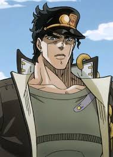
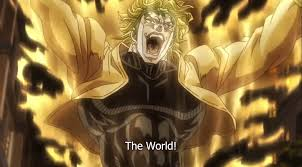

Jotaro Kujo is a japanese high school student who we first meet in a jail cell for fighting but he refuses to leave when he says he's been possesed by something.

We soon find out its not a demon or a ghost but it is whats called a stand that is appearing around Jotaro.
But this new introduction is cut short when his mother develops her own stand but doesnt have the strength or will too refrain from becoming ill because of it.

Now with jotaros mother's life on the line they go on an adventure too stop a 100 year war against the one and only Dio Brando.